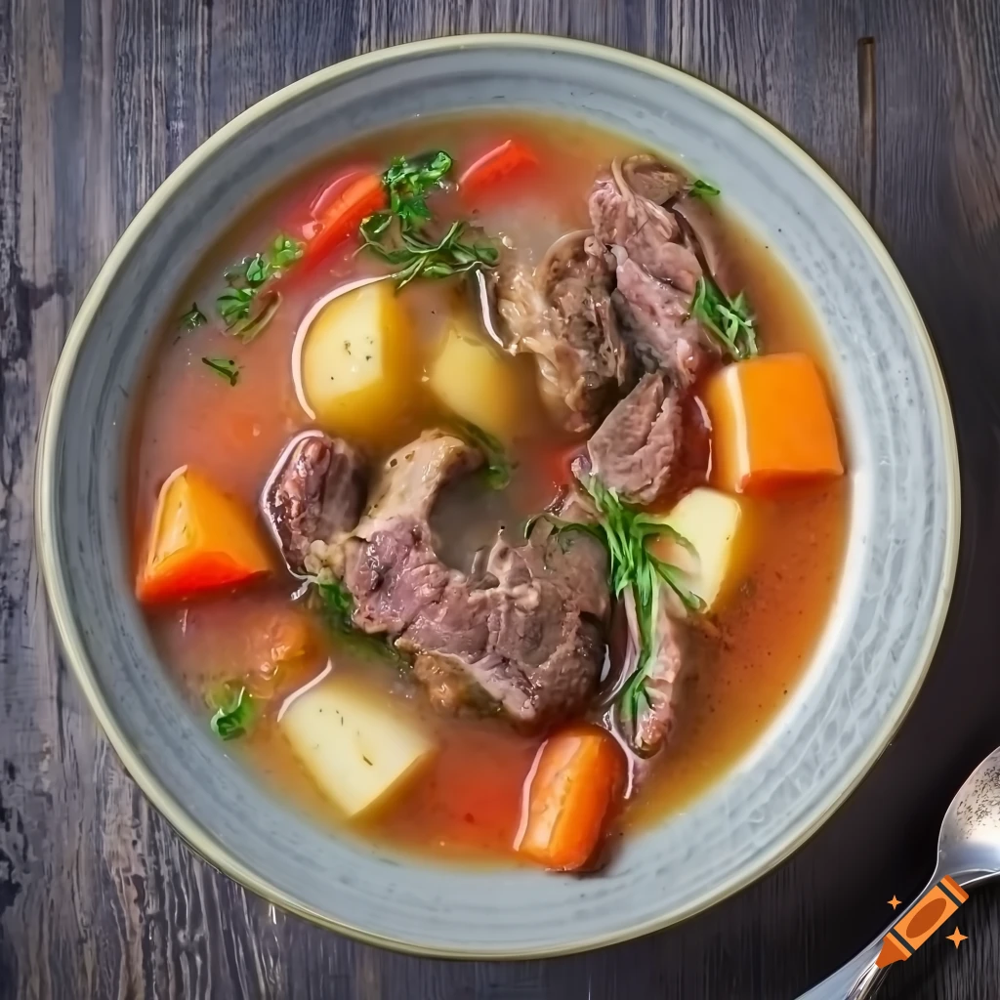

Gulasz jagnięcy
Składniki:
800 g mięsa jagnięcego (np. karkówka lub łopatka), pokrojonego w kostkę
2 cebule, posiekane
3 ząbki czosnku, posiekane
2 marchewki, pokrojone w plasterki
2 papryki czerwone, pokrojone w kostkę
2 łyżki koncentratu pomidorowego
400 ml bulionu jagnięcego lub drobiowego
1 łyżeczka mielonego słodkiej papryki
1 łyżeczka mielonego ostrej papryki (opcjonalnie, jeśli lubisz pikantne dania)
1 łyżeczka suszonego majeranku
1 liść laurowy
2 łyżki oleju roślinnego
Sól i pieprz do smaku
Świeża natka pietruszki do posypania (opcjonalnie, do dekoracji)
Instrukcje:
Na dużej patelni lub w rondlu rozgrzej olej na średnim ogniu.
Dodaj posiekaną cebulę i smaż, aż zmięknie i zacznie się rumienić.
Dodaj mięso jagnięce i smaż, aż będzie lekko zrumienione ze wszystkich stron.
Dodaj posiekany czosnek, paprykę, marchewkę i smaż przez kilka minut, aż warzywa będą miękkie.
Dodaj koncentrat pomidorowy, słodką i ostrą paprykę, majeranek i liść laurowy. Całość mieszaj przez minutę, aby aromaty się połączyły.
Następnie wlej bulion, doprowadź do wrzenia, a następnie zmniejsz ogień i gotuj na wolnym ogniu pod przykryciem przez około 1,5-2 godziny, aż mięso będzie miękkie i soczyste. Możesz też użyć wolnowaru.
Gdy gulasz będzie gotowy, dopraw go solą i pieprzem do smaku.
Podawaj gorący, posypany świeżą posiekaną natką pietruszki, jako dekorację.